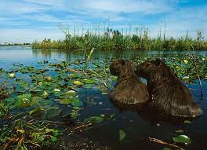

Se denomina Esteros del Iberá a un extenso humedal que abarca unos 12 000 km², en la provincia de Corrientes,1 en el nordeste de Argentina, solo superado en extensión por el Pantanal (brasileño, boliviano y paraguayo) con el cual conforma el segundo humedal más grande del mundo. Forma parte de un sistema hidrográfico mucho más extenso: el macrosistema del Iberá, de cerca de 45 000 km², en el que se desarrolla un ecosistema subtropical y tropical de enorme diversidad.
A lo largo del arco de la zona pueden distinguirse varias lagunas o esteros permanentes de diversas extensión, de las cuales las más amplias son la epónima Iberá, y la laguna Luna, a cuyas orillas se ubica el pueblo de Colonia Carlos Pellegrini, la base más recomendable para visitar la región. Las lagunas Fernández, Galarza, Medina, Paraná y Trin superan también los 15 km²;. El sistema de lagunas es de muy escasa profundidad, por lo general, aunque en épocas de creciente pueden alcanzar los tres metros. Con ellas se alternan escasas áreas de tierra seca, mayormente lomadas bajas y arenosas, y una gran extensión de bañados, es decir, terreno anegable o anegado. El perfil exacto de la superficie firme varía constantemente; sumado a la continuidad visual entre la tierra firme y las cañadas —dada tanto por la gran cantidad de vegetación semisumergida como por la formación de embalsados, enmarañadas formaciones de vegetación flotante a las que la acumulación de tierra de origen eólico y el entrelazamiento de las raíces dota de solidez suficiente para caminar sobre ellas; la orientación se hace extremadamente difícil, tanto en la tierra como en las lagunas.
Pese a ubicarse en zonas subtropicales, el clima del Iberá es netamente tropical[cita requerida] debido a la elevada humedad atmosférica que retiene el calor solar en este medio ambiente. El invierno es relativamente seco (relativamente, ya que la humedad es perenne), con temperaturas mínimas que llegan a 5 °C, y fuertes precipitaciones durante el otoño y la primavera. El verano es también húmedo y muy caluroso, con máximas que pueden superar los 50 °C.[cita requerida]Las precipitaciones anuales rondan los 1700 mm.